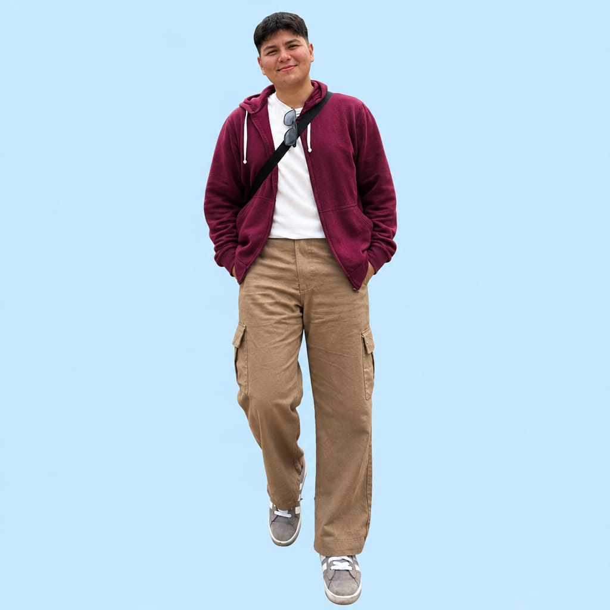

Robótica y Pensamiento Computacional
Integración didáctica de conceptos tecnológicos, algoritmos y automatización aplicados a la educación secundaria técnica.
Bienvenidos a nuestro entorno digital. Somos estudiantes de 2° año del Profesorado en Educación Secundaria en TIC del Instituto Superior de Formación Docente y Técnica CIICAP. Como parte de la evaluacion de el Trabajo Final Integrador, diseñamos este ecosistema educativo virtual con el objetivo de integrar la cultura digital, la innovación pedagógica y las mediaciones tecnológicas en la enseñanza técnica y secundaria.
En el marco de la materia Tecnológia de la Información y la Comunicación, este proyecto aborda el desafio de transformar la aproximación espontánea de los estudiantes hacia la tecnológia en una alfabetización digital con sentido crítico, técnico y reflexivo.
A travéz de secuencias didácticas, recursos multimediales interactivos y la articulación de entornos virtuales de aprendizaje (EVA), nuestra propuesta demuestra como materias como robótica, la programación y el pensamiento computacional pueden ser enseñados promoviendo el trabajo colaborativo, la autonomía y la ciudadanía digital.
Integración didáctica de conceptos tecnológicos, algoritmos y automatización aplicados a la educación secundaria técnica.
Estructuración de aulas virtuales que combinan dinámicas sincrónicas, asincrónicas, simuladores y gamificación.
Fomento de normas de participación responsable, ética, segura y respetuosa en redes y entornos virtuales.
Detrás de este ecosistema educativo digial se encuentra nuesto equipo de 4 estudiantes del Profesorado en TIC del ISFD y T CIICAP, comprometidos con la innovación educativa y la construcción colaborativa del conocimiento: Daniela Lucero Otiñano, Carolina Valdez, Benjamín Atencio y Mateo Agüero.
Estudiante de segundo año del Profesorado en TIC.Su tarea en el proyecto fue la redacción del informe escrito y participación activa en colaboración con la programacion de HTML. Produccion de video.Coordinación de tareas de desarrollo y actividades.
Estudiante de segundo año del Profesorado en TIC. Su tarea en el proyecto fue la participación activa en colaboración con la programación en HTML, las storyboard, gamificación y post producción de videos.

Estudiante de segundo año del Profesorado en TIC. Su participación en el proyecto fue la preparación y creación del boceto del sitio Web. La recolección del material bibliográfico requerido para los fundamentos y la participación activa en colaboración con la programación en HTML.
Estudiante de segundo año del Profesorado en TIC. Su participación en el proyecto fue el orden y creación de los fundamentos necesarios para el desarrollo del sitio Web y la visualización a traves de CSS. Coordinación y participación activa de la programación en colaboración.